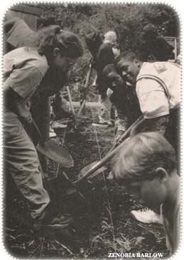

Issue # 178 - February/March 2000
The policy was approved last August by the Berkeley United School District after months of meetings and negotiations with a nonprofit organization called the Food Systems Project, part of the larger nonprofit Center for Ecoliteracy.
Organic breakfasts, lunches and after-school snacks are already being offered to the district's 9,500 students, and, by January, six of the district's 15 schools had installed lunchtime salad bars featuring organic food. For now, schools are buying their goods from Berkeley's twice-a-week farmers' market, from where organic farmers and vendors are regularly invited to visit with students to explain their natural farming techniques. Educators hope to integrate gardening know-how with classroom education, and, in the future, individual schools plan to start up organic gardens of their own to give students hands-on experience while contributing vegetables to the school cafeteria.
"We view the food served in the school cafeterias... as part of the children's overall education," says Tom Bates, director of the Food Systems Project and a former California assemblyman for 20 years.
But despite its strong start, there are challenges facing Berkeley's organic foods project, including a limited budget and the fact that many students do not, or cannot, purchase the $2 lunches. "It's not an easy task to come up with affordable organic items," says Bates. '
There's also the public relations challenge of introducing organic foods to students in kindergarten through grade 12. Most of the Berkeley children, for example, had never seen - much less tasted - a fig or an organic red pear.
"We had to have it sliced for them," Bates recalls. "They tasted it. They liked it."
Even so, says Bates, schools will continue to offer a complement of nonorganic foods in their lunchrooms so that students will still be able to choose between pizza and an organic burrito.
Asked why Berkeley is so organic-conscious, Bates muses, "This is where California cuisine started; we're like a mecca for good food."
-Fred W. Wright Jr.
|
 California school kids get an organic education by growing their own lunch. |
|
|